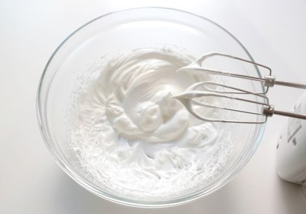

달달하고 귀여운 마카롱을 만들어보자!
[ 재료 준비 ]
- 마카롱꼬끄 : 흰자 50g, 1/2쿠킹스위트 50g, 아몬드가루 65g, 슈가파우더 65g, 갈색 식용색소
- 슈가아이싱 : 슈가파우더 70g, 흰자 15g, 레몬즙 2~3방울, 빨간 색소, 검은색 색소
- 초코가나슈 : 다크초콜릿 50g, 생크림 50g
[ 황금 강아지 마카롱 레시피 ]
- 달걀 50g에 1/2쿠킹스위트 50g을 3번 나눠서 넣고 휘핑해주세요.

- 단단한 머랭을 만든 후 아몬드가루 65g, 슈가파우더 65g을 체에 내린 뒤 가루가 보이지 않도록 골고루 섞어 반죽을 만들어주세요.
- 반죽은 2개로 나눠 하나의 반죽에만 갈색 천연색소를 넣고 섞어주세요.
- 각각 짤주머니에 반죽을 담은 후 새 짤주머니에 넣고 원형깍지를 끼워주세요.
- 강아지 모양으로 짜서 30분 정도 말린 후, 130도 오븐에서 11~13분 구워주세요.
- 슈가파우더 70g, 흰자 15g, 레몬즙을 약간 넣고 슈가아이싱을 만들어주세요.
- 슈가아이싱을 3개로 나눠 빨간색, 검은색 천연색소를 섞은 후 마카롱 위에 강아지 얼굴을 그려주세요.
- 따듯하게 데운 생크림 50g에 다크초콜릿 50g을 넣고 골고루 섞어 초콜릿 가나슈를 만들어 잠시 굳혀주세요.
- 마카롱에 가나슈필링을 적당량 짜서 샌드해주세요.